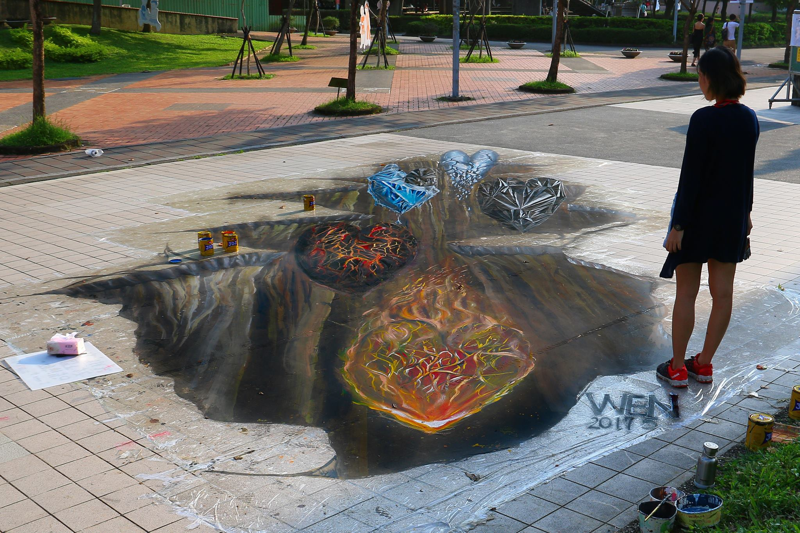
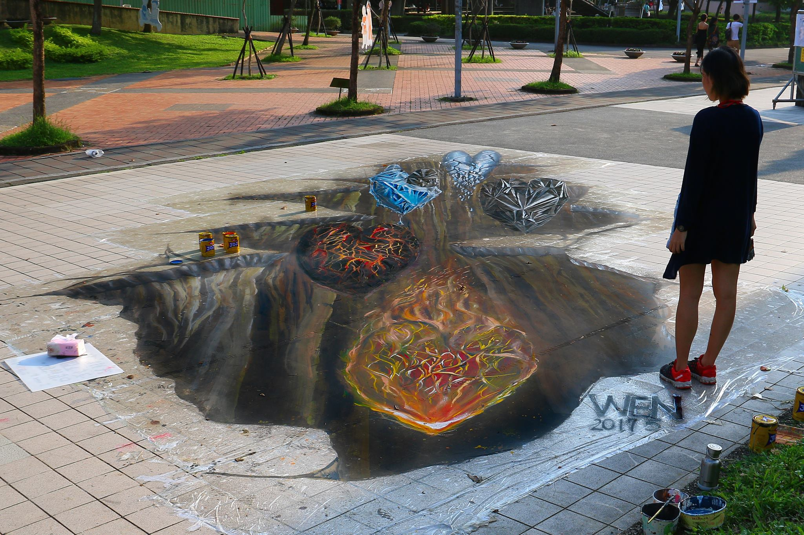

Wen Tung
UX Engineer
I worked as a UX Engineer in Taiwan before, and I graduated from Tilburg University with a MSc degree on Febuary 1st, 2023.
Throughout my academic and career journey, I recognized the potential of combining design with technology, particularly through the iterative process of developing a minimum viable product. This motivated me to improve programming skills to bridge the gap. I took python course in my Master and further my frontend skills through online courses.
I value my ability to self-learn. I have experience with both frontend development and design. I gain a deeper understanding of not only frontend technology but also how to integrate them into for a successful product.
I am eager to contribute my expertise to businesses embracing innovation. If your company is currently working on some exciting products and values diversity and creativity, then I might be the best fit!
Experiences
Engineer / UX Designer
- Built and designed the official website of IISI Meteorological Department based on Vue.js.
- Restructured and optimized the responsive design of the Historical Data Purchasing Service site to increase usability.
- Led the major systems redesign of the Civil Aeronautics Administration (CAA), including two projects: Online Operating System and New Forecasting System.
- Integrated and designed multiple information-intensive systems for the Climate Weather Bureau (CWB).
- Collaborated in the product development of a meteorological financial service, translating user requirements into specifications that aligned with their needs and business model.
Web / UI Designer
- Refactored the e-commerce site with Vue.js to reduce the workload from three days to 10 minutes.
- Designed official sites for hotels with clear brand identification.
- Worked with a full-stack engineer to develop the app “Travel Passport” prototype, a solution binding hotel kiosks and personal data to create brand-new travel experiences.
McCann Worldgroup
- Analyzed content and conducted quantitative analysis to develop customer journey and personas for clients.
- Refined the marketing strategy entry point using GWI/E-ICP for quantitative analysis and Op-view for qualitative research.
Some secrets about me
-
I'm a professional
UX designer, a passionate
engineer
and an amateur
artist :P
- My MBTI is a architect (INTJ-a), which may indicate what I love:)
- I got my first 3D floor art done in my 18th birthday, and I paid my collage tuition by painting mural and floor art.
- I played piano for 10+ years, and my favorite musician is Chopin.
- I did the double eyelid surgery in 19y because I hated my ugly small eyes, but I gradually realised its unique beauty!
 

Let's get in touch!
Feel free to have a coffee chat with me if you want to know more. Let's connect and discuss how I can help bring your product to the next level 😆!